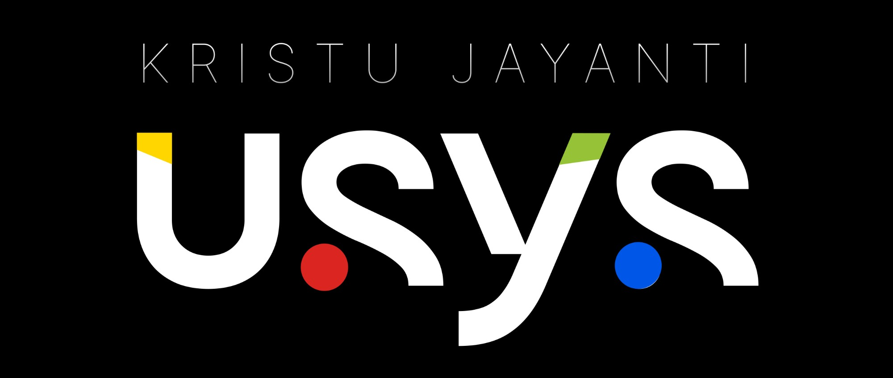
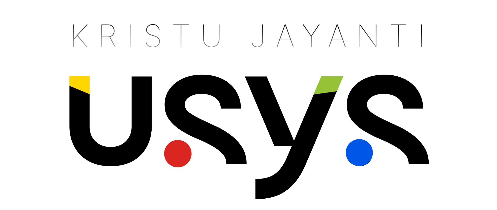
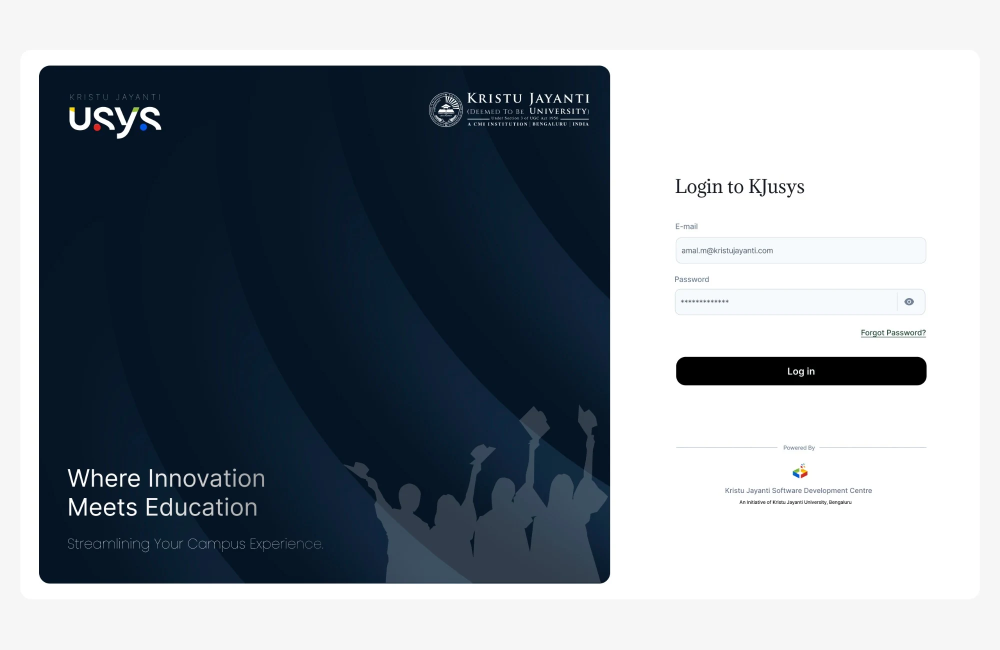
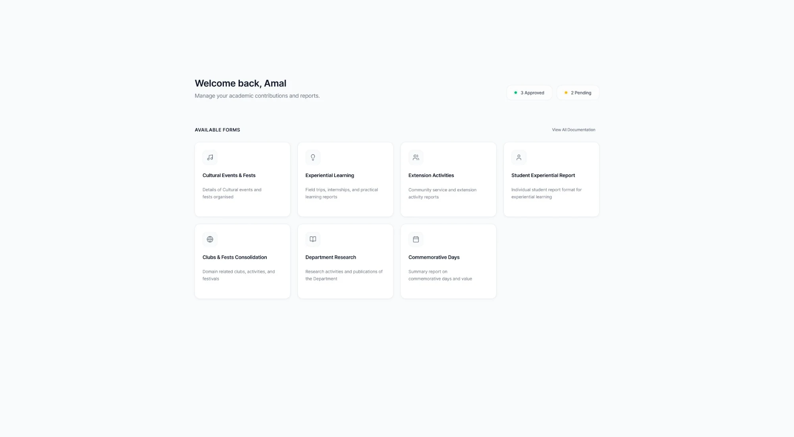
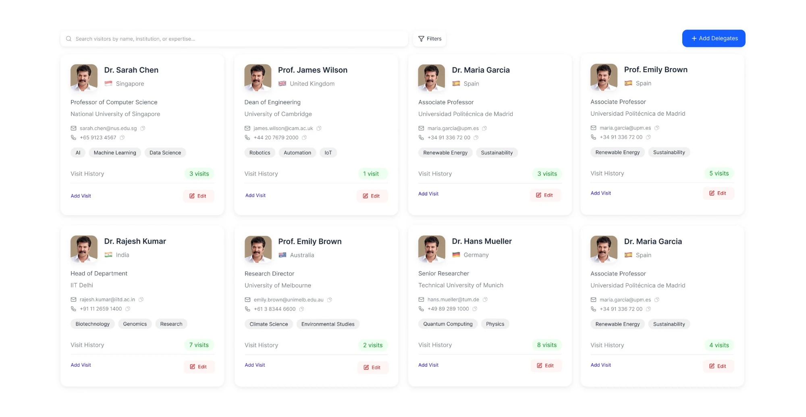
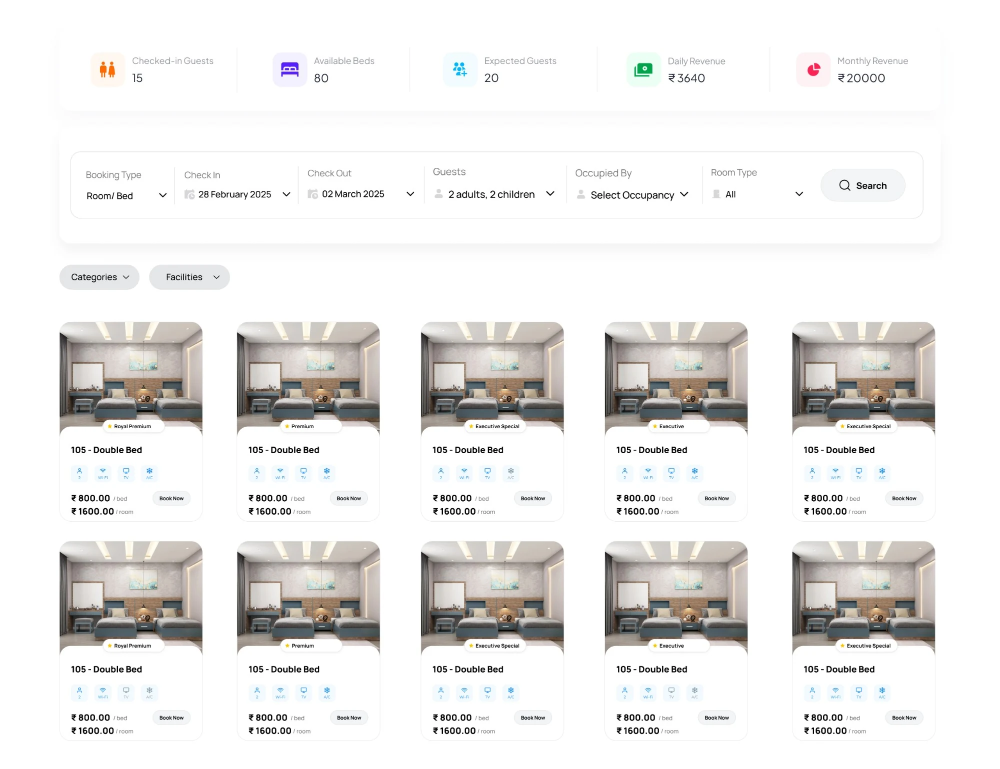
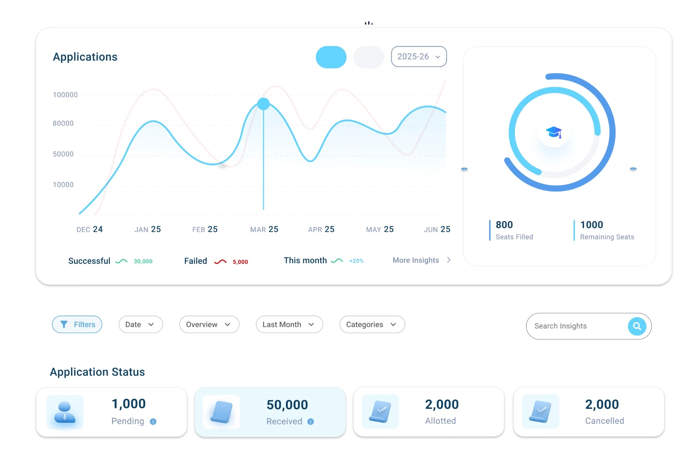

KJusys
A university ERP with 30+ modules live and deployed, each with inner-level configuration control, covering everything a university needs. Built over two and a half years, and still going.
- Role
- UI/UX Design · Brand Identity · Design System
- Status
- Live
The brief
A university is many systems at once: admissions, accommodation, visitors, reports, and more, each with its own people and its own rules. KJusys had to bring all of it into one ERP, and give every module an inner layer of configuration, so the system can be shaped to how each part of the university actually works.
The brand
I designed KJusys from the first sketch of the logo through to the branding, the design system and the screens built on top of it.


A wordmark that keeps the university's name close
The logo sets a bold, lowercase wordmark, marked with a yellow and a green notch and a red and a blue dot, beneath a light, widely spaced Kristu Jayanti line. It works in white on black and in black on white, and the four small colour accents stay the same in both.

A login that carries two brands
The sign-in page is split in two. The left side holds the KJusys logo and the university crest over a deep navy artwork, with the line “Where Innovation Meets Education”. The right side is a plain, quiet form, and a small Powered By mark credits the Kristu Jayanti Software Development Centre.

Every report starts in one place
After signing in, a faculty member lands on the forms they can fill in: cultural events, experiential learning, extension activities, research and more, each as a card with a short description. Two small counters at the top show how many submissions are approved and how many are still pending.

People, not just records
The visiting delegates module keeps every guest in one searchable directory. Each card shows the person’s role and institution, how to reach them, their areas of expertise as tags, and a running count of past visits, with add-visit and edit actions right on the card.

Guest stays, from search to booking
The accommodation module opens with a strip of key figures: checked-in guests, available beds, expected guests and revenue. Below it, one search bar takes the booking type, dates, guests, occupancy and room type, and the results are room cards with their amenities and rates and a Book Now action.

Admissions at a glance
The admissions dashboard plots applications over time, shows seats filled against seats remaining as a ring, and breaks applications down into pending, received, allotted and cancelled. Filters, a date range and a search across insights sit just underneath.
Still growing
KJusys is still in active development. With 30+ modules live and deployed today, new modules and configuration options keep being added, each one built from the same design system.
Have a project like this?
I take on select freelance and contract work. Happy to talk about what you’re building.